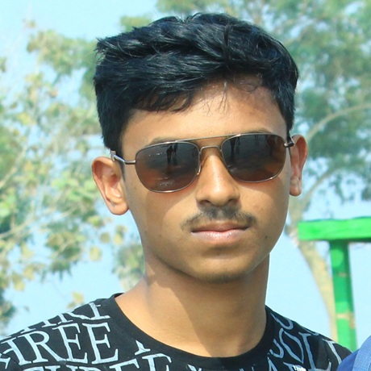

Co-founder of PSBM Labs who keeps every shipped product stable after launch — owning monitoring, bug fixes, version updates and day-to-day support.

Keeps live apps and web products running smoothly after release, with regular update cycles.
Watches uptime and crash rates so issues are caught before users report them.
Reproduces, prioritises and fixes bugs within an agreed response window.
OS, library and SDK updates handled on a regular cadence.
Tests every release candidate before it reaches the Play Store or production.
The first point of contact for users and clients after launch.
A shipped product still needs updates and fixes. Angkan makes sure the studio’s releases keep working as devices, operating systems and user needs change.
Angkan is Prothes Barai’s younger brother. Meet Prothes →, Shreyasi → or read our story →